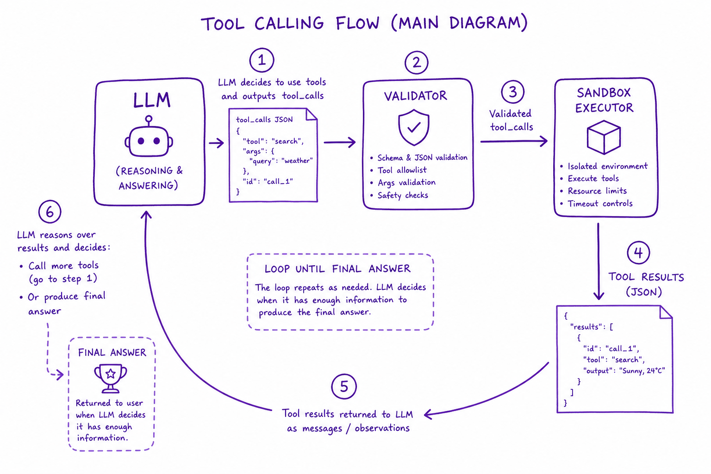
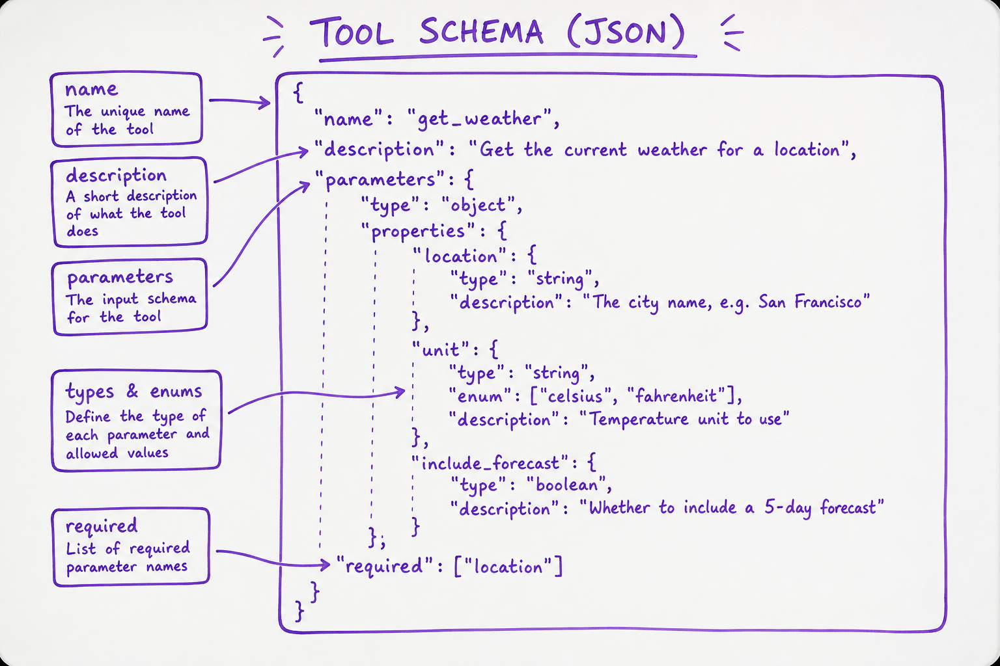
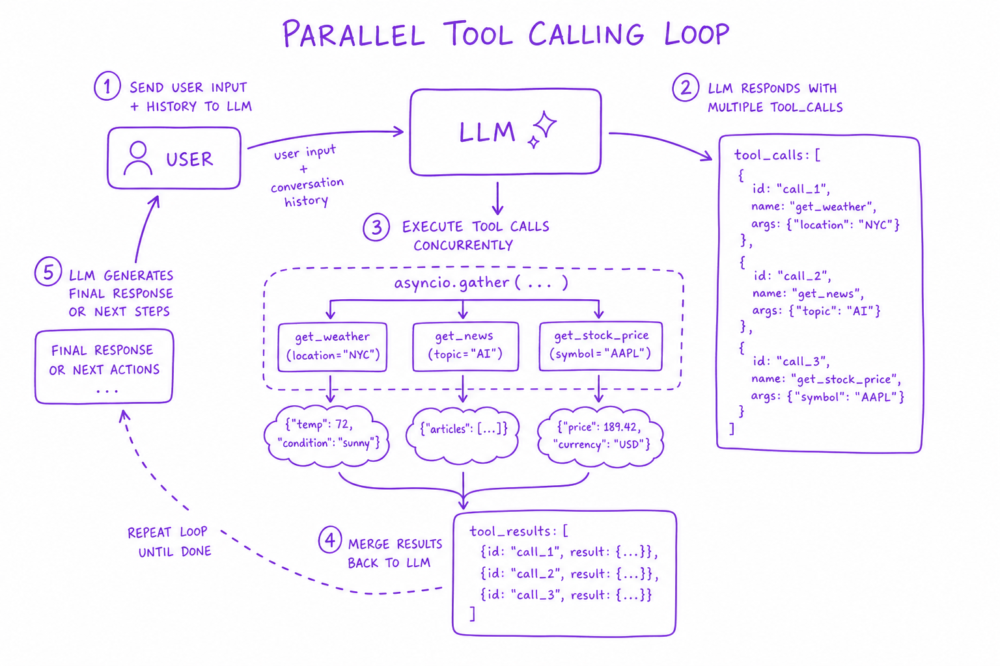

Tool Calling & Functions // Systems
LLM function calling: JSON schema design, tool registry, execution sandbox, parallel calls, error recovery. The bridge between reasoning and the real world.

Tool calling loop: LLM receives tool schemas, emits tool_calls JSON, executor runs in sandbox, results appended to messages, loop until final answer.
01 — What & Why
Tools let LLMs query databases, call APIs, run code. Schema is the contract; executor is the trust boundary.
01a — Core Concepts
| Term | Definition | Gotcha |
|---|---|---|
| Tool schema | JSON Schema describing params | Vague descriptions = bad args |
| tool_calls | LLM output requesting function execution | Validate before execute |
| tool_choice | auto | required | none | required forces tool even when unnecessary |
01b — API Surface
tools=[{"type":"function","function":{
"name":"search_docs",
"description":"Search internal KB",
"parameters":{"type":"object","properties":{
"query":{"type":"string","description":"Search query"}
},"required":["query"]}
}}]
response = client.chat.completions.create(model="gpt-4o", messages=msgs, tools=tools)02 — When to Use / When NOT
| Approach | Use When | Skip When |
|---|---|---|
| Function calling | Structured API/DB access | Answer in context already |
| Code interpreter | Data analysis, plotting | Untrusted user input without sandbox |
03 — Architecture
LLM -> tool_calls[] -> Validator -> Executor (sandbox) -> tool results -> LLM loop
04 — Deep Dive: Schema Design

JSON schema fields: name, description, parameters with types and enums
Descriptions are prompts. Use enums for finite choices. Required fields only. Example values in description.
05 — Deep Dive: Tool Registry
Central registry maps name → handler + schema + ACL. Dynamic registration per tenant. Max 20 tools per call — prune by relevance classifier.
06 — Deep Dive: Execution Sandbox
Network egress allowlist. Read-only DB creds. Timeout 30s. No filesystem write except /tmp. Firecracker/gVisor for code execution.
07 — Deep Dive: Error Handling
Return structured errors to LLM: {error, retry_hint}. Max 3 retries per tool. Circuit breaker on downstream failures.
08 — Deep Dive: Parallel Tools

LLM emits parallel tool_calls; executor runs concurrently; results merged
OpenAI parallel tool_calls. asyncio.gather for independent searches. Sequential when tool B needs tool A output.
09 — Production & Ops
- Log every tool call: name, args, latency, success
- PII scrubbing on args before log
- Rate limit per tool per user
10 — Where It Shows Up
11 — Common Pitfalls
- 20+ tools confuses model — use retrieval over tools
- Executing unvalidated args (SQL injection)
- No timeout on tool execution
- Returning huge raw JSON to context